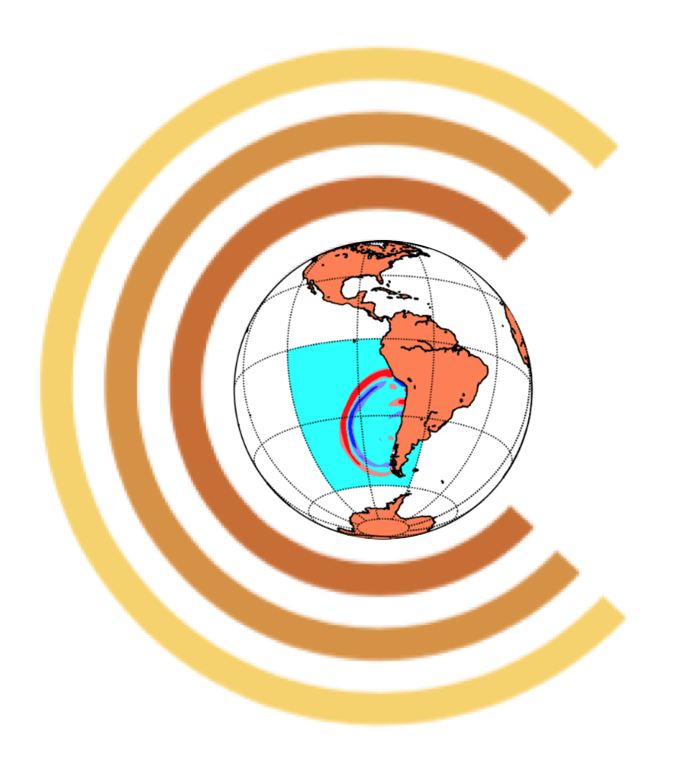

GeoClaw Developers' Workshop and Hackathon
Online only due to COVID-19
May 22-23, 2020
Description of the workshop
The first day, May 22, is coordinated with the
Community Surface Dynamics Modeling System
(CSDMS) Annual
Meeting (May 20-21, 2020), which is also taking place online instead of
in Boulder.
Presentations for Users on Friday, May 22
The workshtop will start with some
Zoom presentations to introduce some new features of GeoClaw and the related
software packages
ForestClaw and D-Claw. These may be of interest to users or potential users
and all are welcome to listen in and join the discussions.
The schedule is below. To register for access to Zoom, please use
this Google form.
On the form you can also request a Zoom meeting with the
developers to discuss any problem you might be having, and/or express
interest in participating more broadly in the Developers' workshop.
Getting started with GeoClaw
If you are not already a GeoClaw user, you might want to first watch this
introductory
video from a recent CSDMS webinar.
The GeoClaw documentation
contains a description of many features and examples. See also the
GeoClaw Gallery.
The website
www.geoclaw.org
has links to some papers related to the development and/or use of
GeoClaw. (That page needs updating, many recent papers are not listed!)
GeoClaw is distributed as part of Clawpack (Conservation Laws Package)
and can be installed following
these instructions.
Alternatively, you can use Docker, for which we suggest the
better image for GeoClaw users that is available on Dockerhub.
A video
illustrating how to use the Docker image for GeoClaw is now available
on the brand new
Clawpack
youtube channel.
With luck, videos of these workshop presentations may also appear
there in the near future.
Schedule and resources
Times below are all Mountain Daylight Time (UTC-0.6:00, as in
Boulder, Colorado) on May 22, 2020.
To register for access to Zoom, please use
this Google form.
Due to the large number of registrants,
please follow these guidelines when using Zoom.
- 9:45 MDT Welcome and Introductions
- 10:00 MDT New capabilities introduced in GeoClaw v5.7.0 (Randy LeVeque,
Univ. of Washington)
- 10:30 MDT Modeling storm surge with GeoClaw (Kyle Mandli, Columbia University)
- 11:00 MDT Using ForestClaw for GeoClaw applications (Donna Calhoun, Boise
State University)
- 11:30 MDT Using D-Claw for debris flow and landslide problems (Dave
George, USGS CVO)
- 12:00 - 12:10 MDT Break
- 12:10 - 13:00 MDT Questions and Open discussion
- 13:00 - 14:00 MDT Break
- 14:00 - ?? Hackathon
Github Repository and project page
The GitHub repository clawpack/geoclawdev-2020
can be used for sharing resources.
We will also try to address some of the open
GeoClaw issues
and
pull requests.